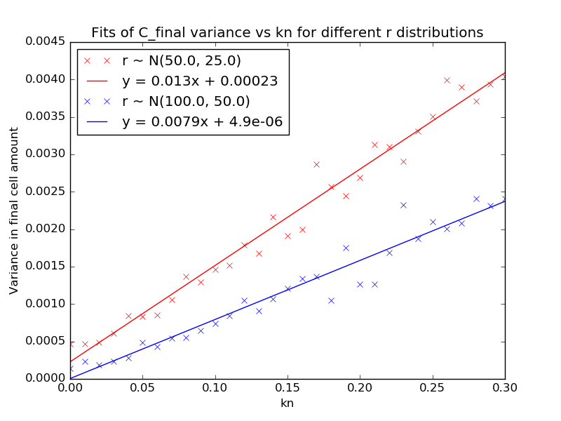
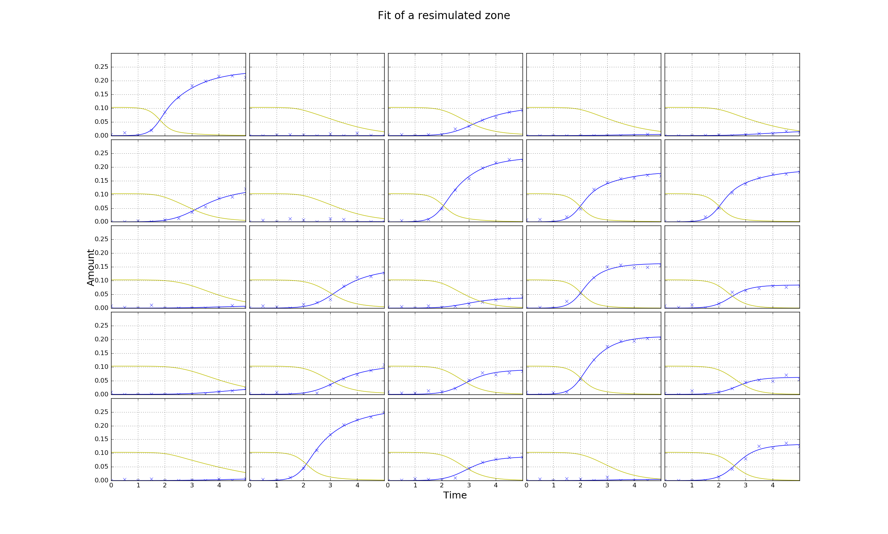
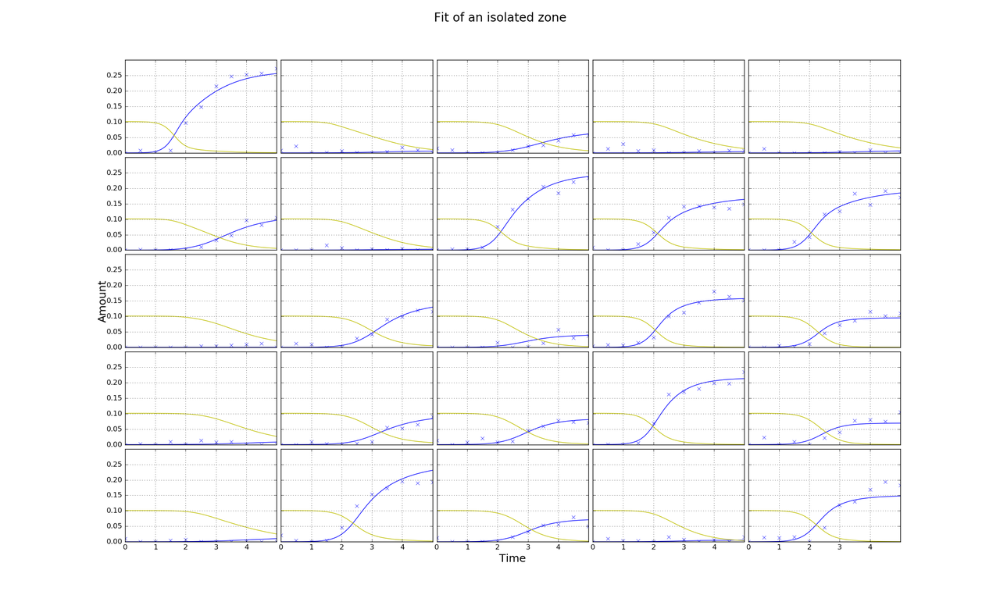
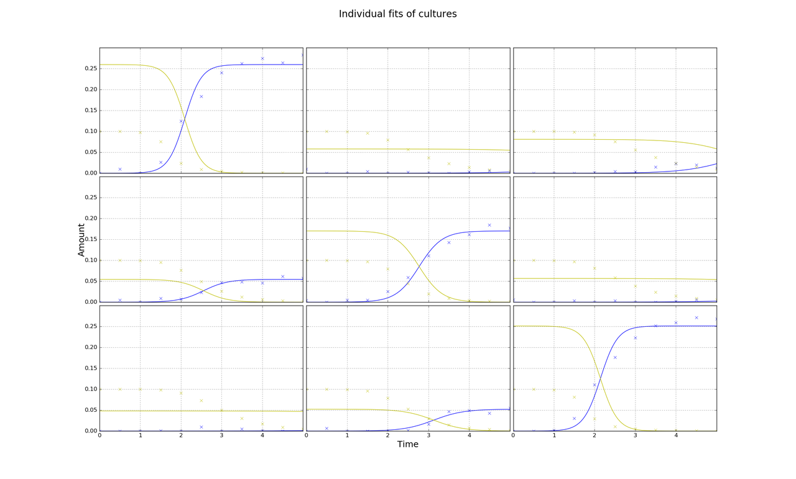

Make a Guess
Guess C_0 and N_0
If growth is more or less complete then this is easy. N_0 is the average final cell amount (given small C_0). We know the typical dilution used in experiments; 1:10,000 for ditiulted cultures (i.e. C_0 ~ N_0/10,000 or could just take average C_f of growers rather than use N_0).
Guess kn
More difficult
Might be possible if we can make good enough guesses of growth constants r and simulate for different kns.
Guess r
Try fitting a simpler model. Then can guess kn.
Fit a smaller zone
-
Try to fit either a 3x3 or 5x5 zone around each cultures using the competition model.
-
Simplified model with linear diffusion term could be good enough for guesses and would be fast. Fit each culture individually. k is culture, not plate, level.
dC/dt = rCN
dN/dt = -rCN + k
-
Arbitrary neighbours? Finite reservoirs? N_low and N_high.
N = -rCN -k_1(N-N_l) -k_2(N-N_h)
N_l_0 = 0; N_h_0 = ?; Too many loose params?
- 2. seems most practical to implement but there might be merit in 1. if this doesn't work.
Fitting
It was important to rescale C_0 to a similar value as N_0 in order for the minimizer to work.
Until we get to a 7x7 grid there are more edge than internal cultures.
Below shows fitting of a zone from the midle of a simulated 16x24 plate. In the first figure amounts have been resimulated from the true parameters and are as they would be if the zone was not part of a larger plate. In the second the amounts from the larger plate have fitted without adjustment.
Guesses from individual fits of the independent model are poor
Using individual fits of the independent model, cultures with the greatest r's are estimated to have the smallest r's.
Inde model: dC/dt = rNC, dN/dt = -rNC.
In the independent model N_0 must be equal to the final cell amount for each culture. If there are more nutrients, for the same r, the reaction should complete in less time. In the competition model N_0 is equal for all cultures, so reactions with greater r are not substantially quicker. This is why the independent model provides poor estimates.
An initial guess of r = 20 was used for all. C_0 was estimated from the average of final cell amounts and knowledge about the ratio (1:1000) and used as a fixed constraint.
True r: 55.7, 22.6, 20.7, 33.8, 38.8, 08.0, 12.3, 31.9, 53.6
Est r: 18.8, 20.0, 20.0, 62.1, 20.8, 20.0, 20.0, 52.6, 18.9
Comments